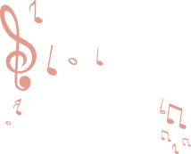

ojib Das is a Bangladeshi singer, musician, and songwriter whose music transcends boundaries and resonates with listeners across generations. Born with an innate passion for melody and rhythm, Sojib has carved a unique space in the contemporary music scene by blending traditional South Asian musical elements with modern pop, rock, and indie influences.
His journey began in the vibrant cultural hub of Dhaka, where he was exposed to a rich tapestry of musical traditions. From the soulful notes of classical ragas to the raw energy of rock bands, Sojib absorbed diverse sounds that would later shape his distinctive artistic voice.
Growing up in a family that cherished music, Sojib Das was drawn to singing from a very young age. He would often participate in school cultural programs and local competitions, where his natural talent and powerful vocal range caught the attention of music teachers and peers alike. His formal training began with classical vocal lessons, which laid the foundation for his technical proficiency and deep understanding of musical theory.
During his teenage years, Sojib discovered the world of Western pop and rock music, finding inspiration in artists like Freddie Mercury, John Legend, and A. R. Rahman. This fusion of Eastern classical discipline and Western contemporary style became the hallmark of his music. He started writing his own songs at the age of 16, channeling his personal experiences, dreams, and observations into heartfelt lyrics.
Sojib's breakthrough came with the release of his debut single "Moner Janala" in 2018, which quickly went viral on social media and streaming platforms. The song's poignant lyrics, combined with Sojib's soulful voice, struck a chord with audiences across Bangladesh and beyond. This was followed by a series of successful singles including "Brishty Tomay," "Shopno Rajje," and "Ferari Mon," each showcasing his versatility as both a vocalist and a songwriter.
His debut album "Prothom Premer Gaan" (2020) received critical acclaim and established him as one of the most promising young artists in the Bangladeshi music industry. The album explored themes of love, longing, hope, and self-discovery, earning him multiple award nominations and a dedicated fan base.
Sojib Das's music defies easy categorization. He seamlessly weaves together elements of pop, rock, folk, and electronic music, creating a sound that is both contemporary and timeless. His lyrics—often written in Bengali—are poetic, introspective, and deeply emotional, reflecting the beauty and complexity of everyday life.
Key influences on his work include legendary Bengali singers like Ritu Guha and Shayan Chowdhury, as well as international acts such as Coldplay, Ed Sheeran, and The Beatles. Sojib has often cited the importance of storytelling in his songwriting, believing that a great song should transport the listener to another world.
At the heart of Sojib's music is a genuine desire to connect with people. He believes that music has the power to heal, unite, and inspire change. Whether performing on stage in front of thousands or writing alone in his studio, Sojib approaches his craft with sincerity, humility, and a relentless pursuit of excellence.
"Music is not just what I do; it's who I am," Sojib says. "Every song is a piece of my soul shared with the world. I want my listeners to feel seen, heard, and understood through my music."
Sojib Das is renowned for his electrifying live performances. His concerts are immersive experiences that blend powerful vocals, dynamic stage presence, and heartfelt storytelling. He has headlined major music festivals in Bangladesh, including Dhaka International Music Fest and Chittagong Rock Fest, and has performed at prestigious venues in London, New York, and Dubai.
In 2023, his "Moner Thikana" tour sold out shows across three continents, cementing his status as a global artist. Fans praise his ability to create an intimate atmosphere even in large venues, often describing his concerts as "transformative" and "unforgettable."
Beyond his solo work, Sojib has collaborated with numerous renowned artists, producers, and songwriters from Bangladesh and abroad. Notable collaborations include tracks with singer Momotaz Begum, rock band Shironamhin, and Indian playback singer Shreya Ghoshal.
Sojib is also deeply committed to giving back to his community. He regularly mentors young aspiring musicians, conducts free music workshops in underprivileged schools, and donates a portion of his concert proceeds to organizations supporting music education and mental health awareness.
Sojib Das continues to evolve as an artist, constantly exploring new sounds, themes, and creative collaborations. He is currently working on his third studio album, tentatively titled "Poth Chola," which promises to be his most personal and ambitious work to date. Fans can also look forward to an upcoming Asia-Pacific tour and several surprise collaborations in the coming months.
"The journey never ends," Sojib reflects. "Every day brings a new melody, a new story to tell. I'm grateful for every listener who comes along with me on this musical adventure."
Connect with Sojib: Follow his journey on social media, stream his music on all major platforms, and join the growing community of fans who believe in the power of authentic, heartfelt music.
Genre Diversity: Sojib covers a wide range of underground music genres, including indie rock, electronic experimental, alternative hip-hop, psychedelic, and more. Our goal is to showcase the diversity within the underground music scene.
Artist Spotlights: We provide in-depth artist profiles, interviews, and features to help you get to know the talented individuals behind the music. Learn about their creative process, inspirations, and personal stories.
Music Discovery: Sojib curates playlists, album reviews, and music recommendations to help you discover fresh and exciting underground tracks and albums. We highlight the best releases from independent labels and unsigned artists.
Community Engagement: Join our vibrant community of music lovers, where you can discuss your favorite tracks, share your own music discoveries, and connect with fellow enthusiasts. Our forums and comment sections are a hub for lively discussions.
Exclusive Content: Sojib offers exclusive content, such as early access to unreleased tracks, behind-the-scenes videos, and live session recordings, for our premium subscribers.
Local Scenes: We shine a spotlight on local music scenes from around the world, helping you explore the underground music culture in different regions. From underground clubs in Berlin to indie bands in Tokyo, we've got it covered.
Event Promotion: Stay updated on underground music events, from intimate club nights to indie music festivals. We promote and cover these events, bringing you the latest news, reviews, and live streams.
Merchandise:Show your love for underground music with Sojib merchandise, including T-shirts, posters, and stickers. Our merchandise store helps support the website's operations.
Legal Compliance:Sojib ensures that all featured music has the necessary licenses and permissions, respecting the rights of artists and copyright laws.
Monetization Strategies: Sojib generates revenue through a combination of methods, including:
Social Media Presence: Sojib maintains an active presence on social media platforms like Facebook, Twitter, Instagram, and YouTube to engage with the community, share content, and promote emerging artists.
Team: Sojib is run by a passionate team of music enthusiasts, including editors, writers, designers, and developers, all dedicated to bringing the best of underground music to our audience.
Please note that this is a fictional description, and the success of a real-world underground music website would depend on factors like content quality, user engagement, and effective marketing strategies.
If you have an event or collaboration opportunity, please don't hesitate to reach out to us.

© Sojib. All Rights Reserved 2026